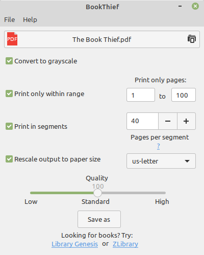
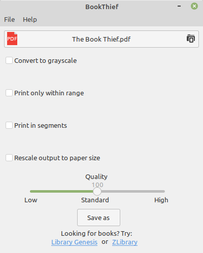
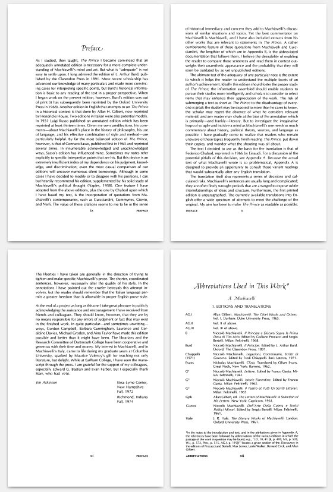
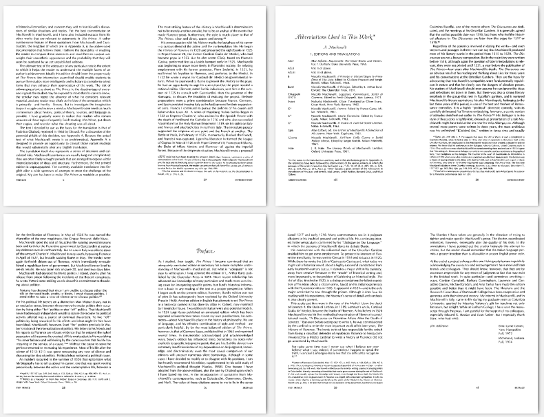
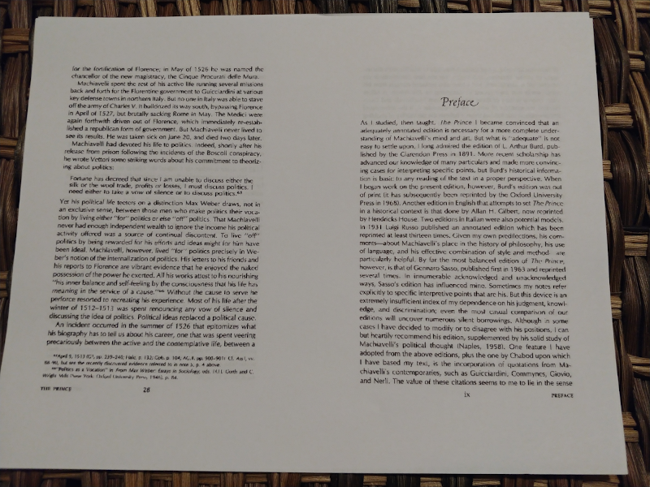
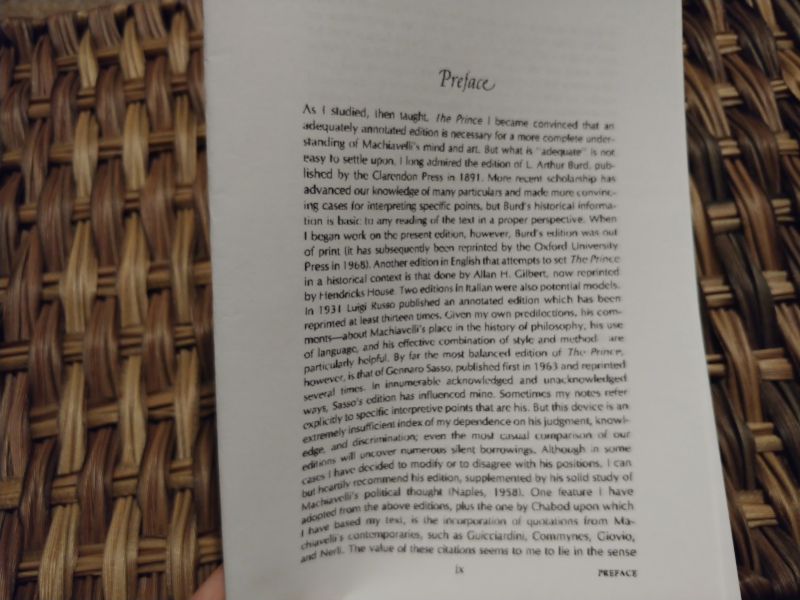

V.O. Artist / Narrator / Audio Specialist
andrew@rail5.org
I struggle with e-books -- I can't focus on them; if I'm going to read something, then, generally speaking, I need it in print.
So, I made a free program (libre y gratis) called BookThief. It's nothing too special:




When it prints, you just fold the whole stack of papers in half, and there's your booklet/pamphlet.
It also supports splitting your PDF into "segments," based on how many sheets of paper you think you can stick together
(I usually staple them)


Like I said, nothing too special. But it is free & open-source software.
You can get its source code here and you can download the program itself here:
Ubuntu-based GNU/Linux distributions can easily install BookThief via the BookThief PPA Repository:
sudo add-apt-repository ppa:rail5/bookthief
sudo apt-get update
sudo apt-get install bookthief
Alternatively, the two .deb package files for BookThief and Liesel (BookThief's core component) can be downloaded here:
BookThief and Liesel